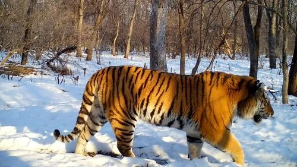

哺乳动物 · 动物界
虎 Panthera tigris

亚洲最大的猫科动物，橙黄皮毛配黑色条纹，独居伏击捕猎，是森林生态系统中无可替代的顶级捕食者。
- 分类
- 门脊索动物门纲哺乳纲目食肉目科猫科属豹属
- 栖息环境
- 从热带雨林到针叶林、红树林与高寒山地的多种森林生境
- 地理分布
- 亚洲的印度、东南亚各国及俄罗斯远东，中国东北、华南、西南有残存种群
- 保护级别
- IUCN 濒危（EN）；中国国家一级保护动物
物种志
虎是现存体型最大的猫科动物，体长 1.4–3.3 米（含尾），体重 65–300 kg，亚种间差异极大，其中东北虎体型最大。它的被毛呈橙黄至红褐色，布有黑色横纹，腹部和面颊为白色；每只虎的条纹排列都不相同，可像指纹一样用于个体识别，皮肤上也同样有纹路。
虎是独居的伏击型捕食者，主要猎食野猪、鹿类等大型有蹄类，常沿兽径潜行至近处后突然扑击，短距离冲刺时速可达 60 km/h。它需要广阔的领地，一只雄虎的领域可达 1000 km² 以上，靠尿液、爪痕和吼声标示边界。虎原分布于从印度次大陆、东南亚到俄罗斯远东的广阔地区，如今野外仅存约 4500 只，分属 6 个亚种；盗猎、栖息地丧失和人兽冲突是主要威胁。
形态与习性
- 食性野猪、鹿类等大型有蹄类，单次可进食 20–30 kg
- 体长1.4–3.3 m（含尾），亚种差异大
- 体重65–300 kg，东北虎体型最大
- 寿命野外约 10–15 年，圈养可超过 20 年
- 繁殖妊娠期约 100–110 天，每胎 2–4 仔
- 社会结构独居，雄虎领地可达 1000 km² 以上
- 活动节律多在黄昏和夜间捕猎
趣味知识
- 每只虎的条纹排列都不相同，可像指纹一样用于个体识别。
- 虎的犬齿长约 7 cm，能咬穿猎物的颈椎和喉部。
- 虎擅长游泳，夏季常泡在水塘中降温。
- 虎的吼声可传约 3 km，用于宣示领地与寻找配偶。